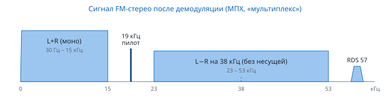

Содержание › Основы радиоприёма
Виды модуляции
Модуляция — способ «нагрузить» радиоволну (несущую) полезной информацией: меняют её амплитуду, частоту или фазу. Чтобы услышать передачу, приёмник должен применить обратную операцию — демодуляцию того же вида. Не тот режим — и вместо речи слышно шипение, бульканье или тишина.
Полоса, девиация, несущая#
- Полоса — ширина участка спектра, который занимает сигнал. Её же нужно выставить в демодуляторе («Полоса» в «Радио»): шире — лишний шум и соседи, уже — искажения.
- Девиация (для ЧМ) — насколько частота отклоняется от несущей при модуляции. Полоса ЧМ по правилу Карсона: B ≈ 2·(девиация + высшая частота звука).
- Несущая — немодулированная составляющая. В AM она видна как узкий пик в центре сигнала.
Аналоговые виды#
| Вид | Что меняется | Полоса | Где | На водопаде |
|---|---|---|---|---|
| AM | амплитуда | 2 × частота звука: 6–10 кГц | авиасвязь 118–137 МГц, вещание ДВ/СВ/КВ, CB | яркая линия несущей с «крыльями» по бокам |
| WFM | частота, девиация ±75 кГц | ≈ 200 кГц (по Карсону со стерео — до ~260) | FM-вещание 87,5–108 МГц | широкая «колбаса» с бахромой |
| NFM | частота, девиация ±2,5 кГц (сетка 12,5 кГц) или ±5 кГц (сетка 25 кГц) | 11–16 кГц | рации, ретрансляторы, такси, МКС, морской диапазон | полоска 10–15 кГц, при молчании — узкая несущая |
| USB / LSB | однополосная: только одна боковая полоса, без несущей | ≈ 2,4–2,8 кГц | радиолюбители на КВ и УКВ (USB выше 10 МГц, LSB ниже), SSB-спутники | «рваная» полоска только с одной стороны от частоты настройки |
| CW | несущая включается/выключается (азбука Морзе) | 50–500 Гц | телеграф радиолюбителей, маяки | пунктир тонкой линии |
Почему SSB нужно подстраивать точнее#
В SSB нет несущей, и приёмник сам «додумывает» её. Ошибка настройки на 100 Гц сдвигает все частоты голоса на 100 Гц — речь звучит «как у утёнка». Подстраивайтесь шагом 10–100 Гц, пока голос не станет естественным. Перепутаете USB и LSB — речь станет неразборчивым бормотанием.
Как приёмник делает тон из телеграфа#
Несущая CW — просто «чистая» частота без звука. SDR4NOOB сдвигает её так, что вы слышите тон 700 Гц — поэтому сигнал на спектре должен быть на 700 Гц в стороне от частоты настройки (это делается автоматически).
FM-стерео и пилот-тон#
После ЧМ-демодулятора FM-станции получается «мультиплексный» сигнал шириной ~60 кГц:

- L+R (сумма каналов) — обычное моно до 15 кГц: его слышит любой приёмник.
- Пилот-тон 19 кГц — метка «здесь стерео». SDR4NOOB включает стерео, только когда слышит пилот (галочка «Стерео (WFM)»).
- L−R (разность) передаётся на поднесущей 38 кГц = 2 × 19 кГц. Сложив и вычтя L+R и L−R, приёмник получает левый и правый каналы.
- RDS на 57 кГц — название станции и текст.
- Стерео шумнее моно на слабом сигнале: если шипит — снимите галочку «Стерео».
- Предыскажения: передатчик поднимает высокие частоты, приёмник опускает обратно — 50 мкс в России и Европе, 75 мкс в США (поле «Предыскажения»).
Цифровые виды#
| Вид | Принцип | Где и параметры | Режим SDR4NOOB |
|---|---|---|---|
| FSK | «0» и «1» — две разные частоты | пейджеры, телеметрия, датчики | — |
| 4FSK | четыре частоты — 2 бита на символ | DMR: 4800 символ/с = 9600 бит/с, отклонения ±648 и ±1944 Гц, два слота TDMA по 30 мс в канале 12,5 кГц, голос — вокодер AMBE+2 | «Радио» → DMR |
| AFSK | FSK тонами звука поверх обычной NFM | APRS: Bell 202, 1200 бод, тоны 1200/2200 Гц, кадры AX.25; 144,800 МГц, МКС 145,825 | «APRS» |
| PSK / QPSK / OQPSK | информация в фазе: 2 (BPSK) или 4 (QPSK) положения | LRPT «Метеор-М»: OQPSK 72 000 символ/с, полоса ≈120–150 кГц, свёрточный код + Рида — Соломона; LRIT «Электро-Л»: BPSK 294 000 символ/с на 1691 МГц | «Спутники» |
| PPM | положение импульса в такте | ADS-B / Mode S: 1 Мбит/с, сообщения 56 и 112 бит, 1090 МГц | «Самолёты (ADS-B)» |
| OFDM | тысячи узких поднесущих (QAM) одновременно | DVB-T2: канал 8 МГц, до 32 768 поднесущих (32K), защитный интервал против эха | «ТВ» — только измеритель |
| SSTV | аналоговая: яркость = частота тона 1500–2300 Гц, синхроимпульсы 1200 Гц | 14,230 МГц USB, МКС 145,800 NFM | «SSTV» |
Как узнать цифровой сигнал на слух
- DMR — жёсткое жужжание с частотой ~33 Гц (пакеты по 30 мс); на водопаде ровная полоска ~10 кГц.
- APRS — короткая (0,3–1 с) «трель-щебет».
- LRPT — ровное шипение; на водопаде — прямоугольный «столбик» шириной ~120 кГц, который сползает по частоте из-за доплера.
- SSTV — «пиликанье» с ритмичными щелчками строк, длится от 36 с до нескольких минут.
См. также: Спектр и водопад, Режим «Радио».